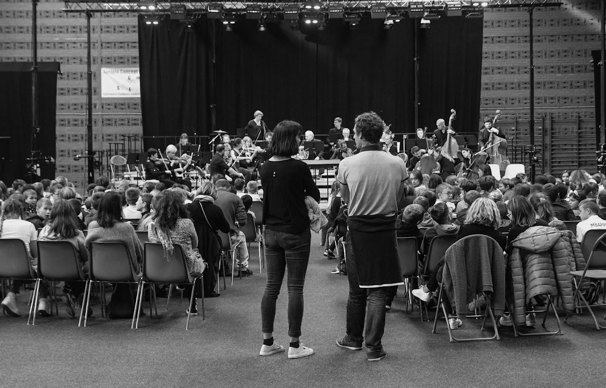

Le projet
Créé en 2021 pour contribuer au développement culturel, l’Orchestre du Lointain est un ensemble orchestral professionnel basé à Calais en Hauts-de-France. Composé de musiciens professionnels résidents dans la région, il est dirigé par la cheffe Sophie Lechelle.
Une ambition artistique
Avec une grande force d’innovation et d’adaptation, l’Orchestre du Lointain fait le choix de l'excellence artistique au profit de la démocratisation culturelle. Il interprète des œuvres du répertoire symphonique à travers des concerts et spectacles dont la diffusion peut être régionale, nationale ou internationale.
Avec Carnet de bal, l’orchestre invite le public à la danse. Dans Petra Wolk dans le Lointain, il fait dialoguer musique et théâtre autour de Pierre et le loup.
Un orchestre au plus près des territoires
L’Orchestre du Lointain privilégie des actions élaborées sous le mode partenarial pour aller à la rencontre d’autres milieux, d’autres environnements, d’autres publics. Concevoir des projets croisés, à partir d’une thématique singulière, lui permet d’investir des champs inattendus de manière originale. Avide de partages et d’échanges, il a vocation à se produire en intégrant de jeunes musiciens, solistes, chefs invités ou comédiens.
Porté par une association reconnue d'intérêt général, l’Orchestre du Lointain est un outil au service des territoires et des habitants. Son engagement sociétal s’incarne avant tout dans ses valeurs de réalisation individuelle et collective, d'émancipation, d’inclusion, de socialisation, de citoyenneté, de partage et de solidarité.
La musique en partage
Il s’engage résolument envers tous les publics pour offrir la beauté et la magie de la musique, pour l’épanouissement de tous. Sa volonté d’élargissement des publics et de démocratisation de la musique classique se décline notamment par sa fonction éducative pour des publics ciblés sous des formats renouvelés et adaptés. Autour de ses productions, il mène des actions éducatives sous forme d’ateliers de pratique musicale et artistique ou de concerts participatifs.
« Un orchestre symphonique est la plus belle métaphore de la société que je connaisse. Chacun est indispensable, mais doit savoir s'effacer pour faire vivre une réalité supérieure »Riccardo Muti

